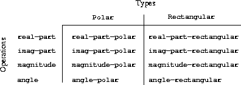
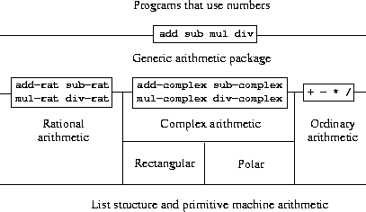
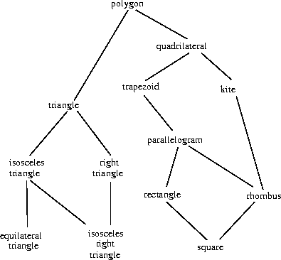

Structure and Interpretation of Computer Programs - Building Abstractions with Data
目录
Building Abstractions with Data
第一章中介绍了如何对表达式进行组合，抽象来解决实际问题。并且通过将函数对象作为参数和返回结果，能够实现更为一般的编程方式。本章将更为深入的研究数据 data 对程序设计的影响。
考虑在做数值计算的时候，会处理分数，会有一个操作函数 add-rat 接受两个分数，然后计算出和。分数右两个整数组成：分子和分母。这样 add-rat 在接受输入参数时候，就需要接受4个参数，分别为2个分子和2个分母，在计算过程中，我们需要知道哪两个参数是表示一个分母的；这样在进行大量计算的时候，会增加编程难度；而且没有办法将分母的计算逻辑和整型的计算逻辑进行统一处理。
解决方法就是可以将分子和分母组成一个复合数据对象，这个对象能够在编程中视为一个单元进行处理。这样可以增加编程语言的表达能力。
计算线性 ax+by ，不引入复合数据对象，可以写出如下代码：
1: (define (linear-combination a b x y) 2: (+ (* a x) (* b y)))
上述函数可以很好的处理内置数值数据，但是在考虑我们处理的是分数，复数，多项式时，并不能很好的处理，因为内置的 * 和 + 操作函数并不能处理对应数据类型。我们可以重新定义该函数：
1: (define (linear-combination a b x y) 2: (add (mul a x) (mul b y)))
linear-combination 函数并不需要知道对应的参数实现；只需要保证处理函数 add 和 mul 可以根据参数类型调用对应的操作即可处理任何复杂的情况。如果没有复合数据对象，那么 linear-combination 就不能将任意的数据用一个参数表示，无法实现一个一般计算过程。
函数抽象提供将复杂计算过程封装成简单对象的能力，数据抽象可以提供一个抽象栅篱，将程序分割成不同的部分，从而封装复杂度，降低编程代价，提高编程能力。
简介数据抽象 - Introduction to Data Abstraction
数据抽象将基础数据聚合当成一个复合对象使用，从而使得底层复合对象的实现与操作隔离；实现数据实现与操作隔离。
有理数的算数运算
在实现有理数运算的时候，假设我们已知构造函数，分子获取函数和分母获取函数：
-
(make-rat <n> <d>) - 构造函数，返回一个有理数，其分子是整数<n>，分母是整数<d>
-
(numer <x>) - 返回有理数<x>的分子
-
(denom <x>) - 返回有理数<x>的分母
那么就可以通过分数对应的运算法则得到对应的函数：
$$\frac{n_{1}}{d_{1}}+\frac{n_{2}}{d_{2}}=\frac{n_{1}d_{1}+n_{2}d_{2}}{d_{1}d_{2}}$$
$$\frac{n_{1}}{d_{1}}-\frac{n_{2}}{d_{2}}=\frac{n_{1}d_{1}-n_{2}d_{2}}{d_{1}d_{2}}$$
$$\frac{n_{1}}{d_{1}}*\frac{n_{2}}{d_{2}}=\frac{n_{1}n_{1}}{d_{1}d_{2}}$$
$$\frac{\frac{n_{1}}{d_{1}}}{\frac{n_{2}}{d_{2}}}=\frac{n_{1}d_{2}}{d_{1}n_{2}}$$
$$\frac{n_{1}}{d_{1}}=\frac{n_{2}}{d_{2}}\ 当且仅当\ n_{1}d_{2}=n_{2}d_{1}$$
1: (define (add-rat x y) 2: (make-rat (+ (* (numer x) (denom y)) 3: (* (numer y) (denom x))) 4: (* (denom x) (denom y)))) 5: 6: (define (sub-rat x y) 7: (make-rat (- (* (numer x) (denom y)) 8: (* (numer y) (denom x))) 9: (* (denom x) (denom y)))) 10: 11: (define (mul-rat x y) 12: (make-rat (* (numer x) (numer y)) 13: (* (denom x) (denom y)))) 14: 15: (define (div-rat x y) 16: (make-rat (* (numer x) (denom y)) 17: (* (numer y) (denom x)))) 18: 19: (define (equal-rat? x y) 20: (= (* (numer x) (denom y)) 21: (* (numer y) (denom x))))
抽象屏障 - Abstract Barrier
在上述有理数的构造和计算过程中，我们其实是把先假设我们已经拥有了 make-rat numer denom 函数后，直接编写出了对应的计算函数。这个过程中，我们已经使用了一种抽象，即复合数据对象只对外暴露构造和选取函数接口，并不需要暴露底层实现细节。

上图中的横线表示了抽象屏障 Absract Barrier ，每层屏障将下一层的实现细节对该层的操作进行了屏蔽。使用有理数的程序只需要调用下一层中的 add-rat sub-rat ... 函数即可； add-rat sub-rat ... 只需要调用 make-rat numer denom 函数即可。依次类推，每层只关心下一层的接口使用，不需要知道实现细节。
这种分层的设计有很多优点：
-
代码容易维护和修改 - 每一层都可以被替换或者修改，只需要接口函数不变，即可实现对整体没有影响
-
代码容易开发 - 开发过程中，每层的开发逻辑，只以来于下一层的接口函数，并不需要关心具体实现细节
-
代码容易调试 - 每次只需要保证下一层的逻辑正常即可，这样可以一层一层向上进行调试
层次性数据和闭包性质 - Hierarchical Data and the Closure Property
在有理数构造中，我们可以看到 scheme 提供了 cons 函数用于构造简单的复合对象 序对 。 cons 构造的复合对象具有两个元素，可以分别用 car 和 cdr 来访问。可以认为 car 用来存储元素， cdr 用来存储下一个 cons 对象的指针，这样可以构造无限长度的数据对象。

如图所示了 (cons 1 2) 对象，其中 (car (cons 1 2)) -> 1 , (cdr (cons 1 2)) -> 2 。通过这个简单的基础数据对象，我们就可以组合成更为复杂和具有一定存储原理的数据对象：

我们使用 cons 建立的序对对象同时也可以作为序对中的一元，这样就赋予了序对无限扩展的能力。我们称这种能力为闭包性质(closure property)。所有具有闭包性质的对象，都具有一种无限扩展的能力；例如表达式(expression)，表达式可以作为参数，传入另一个表达式中，这样就使得表达可以具有更为强大的表达能力。
序列的表示 - Representing Sequences
利用序对表示的第一个有用的数据结构就是序列(Sequences)，表示一批数据的汇集对象！其中有 链表(list)、数(tree)、队列(queue)等
- 链表 list

1: (cons 1 2: (cons 2 3: (cons 3 4: (cons 4 nil))))
通过
cons的嵌套，就可以实现一个简单的链表结构，car可以看作对链表的第一个元素的读取，cdr表示取链表除了第一个元素的剩下元素组成的链表。
- 表操作 - List Operations
通过
car和cdr两个操作我们就可以实现对当前元素和余下元素的处理流程。
计算表的长度的递归(
recursive)过程如下：
- 任意的表的长度等于这个表的
cdr后的长度加一
- 空表的长度为0
1: (define (length items) 2: (if (null? items) 3: 0 4: (+ 1 (length (cdr items))))) 5: 6: (length (list 1 2 3 4))
4
也可以通过迭代(
iterative)计算表的长度:
1: (define (length items) 2: (define (length-iter a count) 3: (if (null? a) 4: count 5: (length-iter (cdr a) (+ count 1)))) 6: (length-iter items 0)) 7: 8: (length (list 1 2 3 4))
4
- 对表的映射 - Mapping over lists
一个特别操作是将一个特定的变换或者函数作用到一个表的所有元素，得到所有的结果构成表。
例如对一个表的所有元素做一次缩放：
1: (define (map proc items) 2: (if (null? items) 3: '() 4: (cons (proc (car items)) (map proc (cdr items))))) 5: 6: (map abs (list -10 2.5 -11.6 17))
(10 2.5 11.6 17)
map是一个很重要的数据结构，不仅因为他代表了一种公共的模式，而且建立了处理层的高层抽象。将底层的链表的实现与处理过程进行的抽象。
- 任意的表的长度等于这个表的
- 表操作 - List Operations
- 层次性结构
将表作为序列的表示方式，也可以推广到元素本身也是序列的序列。
例如：
1: (cons (list 1 2) (list 3 4))这是一个包含三项的表，其中第一个是一个表
(1 2)，第二个是元素3，最后一个是元素4。用cons打印出来如下图所示：

这种结构，我们可以看作一种树结构。序列元素可以看作为树的分支：

一般处理树状结构的最有力方法是递归，遇到树的分支，可以看作一个全新的树来处理，直到达到树的叶节点。例如计算一个树中的叶子节点的数量:
- 树的叶子节点数量等于子数的叶子节点的和
- 空树的叶子节点等于0
- 叶子节点为1
1: (define (count-leaves x) 2: (cond ((null? x) 0) ;; 空树为0 3: ((not (pair? x)) 1) ;; 叶子节点为1 4: (else (+ (count-leaves (car x)) ;; 左子数叶子节点数量 5: (count-leaves (cdr x)))))) ;; 右子树叶子节点数量
- 树的叶子节点数量等于子数的叶子节点的和
- 序列作为约定的接口 - Sequences as Conventional Interfaces
我们在数据抽象中，主要强大的是通过对复合对象接口的约束，能写实现不被复合数据对象实现细节限制的代码。另外通过约定一种数据提取接口与高阶函数进行结合，就能实现对一般序列数据对象通用化处理过程。
考虑计算叶子节点为奇数的平方和：
1: (define (sum-odd-squares tree) 2: (cond ((null? tree) 0) 3: ((not (pair? tree)) 4: (if (odd? tree) (square tree) 0)) 5: (else (+ (sum-odd-squares (car tree)) 6: (sum-odd-squares (cdr tree))))))
考虑计算斐波那契小于n且为偶数的表：
1: (define (event-fibs n) 2: (define (next k) 3: (if (> k n) 4: nil 5: (let ((f (fib k))) 6: (if (event? f) 7: (cons f (next (+ k 1))) 8: (next (+ k 1)))))) 9: (next 0))
虽然这两个计算过程差异非常大，但是通过两个计算流程抽象还是能够找到一些相似之处。
第一个程序：
- 枚举一个树的所有叶子节点
- 过滤，取出奇数的叶子节点
- 求解平方
- 累加所有平方和
第二个程序：
- 枚举从0到n的整数
- 计算斐波那契
- 过滤出偶数序列
- cons累积结果
从上述两个过程，可以看成电子信号处理中的一个个过滤器。首先为
枚举器生成对应的待处理数据序列，然后送入到过滤器过滤出满足需求的序列，然后是映射器将对应的序列映射结果值，最后送到累积器中，将所有结果进行累积。

如果我们能够将上述两个计算函数拆解成对应的各种过滤器，则可以实现一个信号流结构的代码，提高代码的结构清晰性。
- 序列操作 - Sequence Operations
为了实现上述的信号流处理代码，我们需要首先确定内部流转的信号流的具体表现形式。这里可以很自然想到复合数据对象
序列来实现信号。这样我们就可以使用对应的操作函数实现对应的过滤器：
其中参考map的过程，可以自然实现一个映射器:
1: (map proc sequence)
过滤器实现：
1: (define (fileter predicate sequence) 2: (cond ((null sequence) '()) 3: ((predicate (car sequence)) 4: (cons (car sequence) 5: (filter predicate (cdr sequence)))) 6: (else (filter predicate (cdr sequence)))))
累积器实现：
1: (define (accumulate op initial sequence) 2: (if (null? sequence) 3: initial 4: (op (car (car sequence)) 5: (accumulate op initial (cdr sequence)))))
枚举器：
1: (define (enumerate-interval low high) 2: (if (> low high) 3: '() 4: (cons low (enumerate-interval (+ low 1) high)))) 5: 6: (define (enumerate-tree tree) 7: (cond ((null? tree) '()) 8: ((not (pair? tree)) (list tree)) 9: (else (append (enumerate-tree (car tree)) 10: (enumerate-tree (cdr tree)))))
enumerate-interval用于枚举从low到high的数据序列；enumerate-tree用于将一个树tree转为对应的链表。
如此我们就可以通过这些过滤器的组合实现上述两个函数：
1: (define (sum-odd-square tree) 2: (accumulate + 3: 0 4: (map square 5: (filter odd? 6: (enumerate-tree tree))))) 7: 8: (define (even-fibs n) 9: (accumulate cons 10: '() 11: (filter event? 12: (map fib 13: (enumerate-interval 0 n)))))
通过这些模块化后的过滤器组合就能很快的实现各种功能函数，这种设计更为灵活和模块化。
- 枚举一个树的所有叶子节点
符号数据 - Symbolic Data
scheme 提供了符号数据(symbolic data)，用于处理符号对象。使得表达式 expression 也能表示为内部的一种数据对象，提供了元编程 meta programming 的可能。
引用 - Quotation
例如列表：
1: (a b c d) 2: (23 45 17) 3: ((Norah 12) (Molly 9) (Anna 7) (Lauren 6) (Charlotte 4))
直接输入到 scheme REPL 中，会被当成表达式进行计算，但是如何让解释器知道我们输入并不是一个表达式，而是一个列表，并且不会对其中任何元素进行求值 eval ？ 这里需要引入引用操作符(Quota)，利用 引用 我们就同样可以将表达式的字面 literature 输入到解释器中，作为参数进行各种运算，这种特殊的功能可以使得 scheme 具有元编程的能力。
1: (define a 1) 2: (define b 2) 3: 4: (list a b) => (1 2) 5: 6: (list 'a 'b) => (a b) 7: 8: (list 'a b) => (a 2)
其中： ='= 可以用来引用其后符号数据，而不会进行求值。
求导 - Symbolic Differentiation
这里通过对代数表达式进行求导，从而说明符号计算。例如：输入代数表达式 \(ax^{2}+bx+c\) 和参数 x , 求导结果为 \(2ax+b\) 。对代数表达式求导是符号计算及符号编程语言的主要解决的问题方向。
- 基于抽象数据的求导函数
我们首先考虑最简单的求导表达式，只处理乘法和加法，并且每个操作符只接受2个参数，如下是简单的求导规则：
\(\frac{dc}{dx}=0\ 当c为常量或者非x的变量\)
\(\frac{dx}{dx}=1\)
\(\frac{d(u+v)}{dx}=\frac{du}{dx}+\frac{dv}{dx}\)
\(\frac{d(uv)}{dx}=u\frac{dv}{dx}+v\frac{du}{dx}\)
这里可以看出最后两个规则中，是通过递归调用求导函数，将求导表达式拆分成更小粒度的表达式进行求导。整个过程最后会归结到前两个表达式求出求导值0或者1。
这里我们首先采取抽象，假设我们已知代数表达式的表示方式(
constructor)，并且能够确定表达式是加法还是乘法(predicator)，从而能够取出不同的参数对象(extractor)：
1: (variable? e) 判断e是否是变量 2: (same-variable? v1 v2) 判断两个变量是否相同 3: (sum? e) 判断表达式是否是加法 4: (addend e) 取出加法表达式的第一个参数 5: (augend e) 取出加法表达式的第二个参数 6: (make-sum a1 a2) 构建加法表达式，参数为a1和a2 7: (product? e) 判断表达式是否是乘法表达式 8: (multiplier e) 取出乘法表达式的第一个参数 9: (multiplicand e) 取出乘法表达式的第二个参数 10: (make-product m1 m2) 构建乘法表达式，参数为m1和m2
通过上述的抽象，我们就可以构建求导函数:
1: (define (deriv exp var) 2: (cond ((number? exp) 0) 3: ((variable? exp) 4: (if (same-variable? exp var) 1 0)) 5: ((sum? exp) 6: (make-sum (deriv (addend exp) var) 7: (deriv (augend exp) var))) 8: ((product? exp) 9: (make-sum 10: (make-product (multiplier exp) (deriv (multiplicand exp) var)) 11: (make-product (deriv (multiplier exp) var) (multiplicand exp)))) 12: (else (error "unknow expression type -- DERIV" exp))))
- 代数表达式 - Algebraic Expressions
代数表达式的实现可以采取多种方式，其中比较直观的是采取一个list结构体表示表达式，\(ax+b\) 可以表示为
(a * x + b)；另外一种的选择是直接采取scheme中表达式的前缀形式，(+ (* a x) b)；很明显采取前缀表达式具有更好的层次信息，更好的抽取逻辑(extractor)。
采取前缀表达式，可以构建如下抽象函数：
-
variables? - 判断是否是变量
1: (define (variable? x) (symbol? x))
-
same-variable? - 判断变量是否是同一个
1: (define (same-variable? v1 v2) 2: (and (variable? v1) (variable? v2) (eq? v1 v2)))
-
make-sum make-product - 构建乘法和加法表达式
1: (define (make-sum a1 a2) (list '+ a1 a2)) 2: (define (make-product m1 m2) (list '* m1 m2))
-
sum? - 判断是否乘法表达式
1: (define (sum? exp) (and (pair? exp) (eq? '+ (car exp))))
-
addend augend - 抽取加法表达式参数
1: (define (addend exp) (cadr exp)) 2: (define (augend exp) (caddr exp))
-
product? - 判断是否是乘法表达式
1: (define (product? exp) (and (pair? exp) (eq? '* (car exp)))
-
multiplier multiplicand - 抽取乘法表达式参数
1: (define (multiplier exp) (cadr exp)) 2: (define (multiplicand exp) (caddr exp))
通过引入符号数据对象，我们就可以实现对表达式的求导，同样的可以实现对
scheme语言的扩展。
-
抽象数据对象的多重表示 - Multiple Representations for Abstract Data
在本章中，我们通过引入不同的抽象层&抽象栅栏(Abstract Barrier)从而使得层级之间可以封装实现细节，只暴露对应接口，从而将复杂的程序设计分解成一个一个简单的子任务。
上述的程序设计过程中，会碰到一个抽象数据对象可能有多重表示，这时希望能够设计一种编程模式可以在一个程序设计中综合利用多种数据表示。同时，在多人编程模式下，每个人都设计了自己的抽象数据对象，希望可以通过一种设计模式，达到多种抽象数据实现共存，并且无需修改任何代码就可以将所有代码集成，从而可以达到程序设计的可加性(additively)。
一种设计模式是通过设计通用函数(generic procedures)，该函数可以处理潜在的任何抽象数据；这种设计模式需要引入面向数据的编程(data-directed programming)在待处理的数据对象中包含数据类型(type tags)，从而实现通用编程。
我们通过引入复数的计算设计，从而实现面向数据的编程如何来达到多重表示共存，且实现代码的可加性。

图中： 横线 是抽象栅栏，用于隔离不同抽象层间的实现细节；不同复数实现间的 竖线 用来表示不同的复数实现。
复数的表示
复数在数学上有两种表示形式：代数形式和极坐标形式。
复数在几何上表的是在 x-y 二维坐标系上表示一个点：

-
代数形式 - 由实部(
real part)和虚部(imageinary part)组成，其中表示坐标的两个坐标轴坐标。这样可知道代数形式的加法规则就是两个坐标相加：
\(Real-Part(z_{1}+z_{2})=Real-Part(z_{1})+Real-Part(z_{2})\)
\(Imaginary-Part(z_{1}+z_{2})=Imaginary-Part(z_{1})+Imaginary-Part(z_{2})\)
-
极坐标形式 - 由极角(
angle)和极摸(magnitude)组成，如图(A r)所示，可以知道极坐标形式的乘法：
\(Magnitude(z_{1}z_{2})=Magnitude(z_{1})Magnitude(z_{2})\)
\(Angle(z_{1}z_{2})=Angle(z_{1})+Angle(z_{2})\)
这里就有两种复数的表示形式，不同的表示形式适合不同的操作。而使用复数库进行运算的高阶接口来看，并不需要知道具体的实现，只需要实现不同的数据抽取接口即可(extractor)，例如从极坐标中得到实部，从代数表示中得到极角。那么从而需要实现4种抽取函数： real-part, imag-part, magnitude, angle 。
同时，需要两个构造函数 make-from-real-imag 和 make-from-mag-ang 返回分别对应的复数。
具有如上复数的抽象数据我们就可以实现对应的一些操作了：
1: (define (add-complex z1 z2) 2: (make-from-real-imag (+ (real-part z1) (real-part z2)) 3: (+ (imag-part z1) (imag-part z2)))) 4: 5: (define (sub-complex z1 z2) 6: (make-from-real-imag (- (real-part z1) (real-part z2)) 7: (- (imag-part z1) (imag-part z2)))) 8: 9: (define (mul-complex z1 z2) 10: (make-from-mag-ang (* (magnitude z1) (magnitude z2)) 11: (+ (angle z1) (angle z2)))) 12: 13: (define (div-complex z1 z2) 14: (make-from-mag-ang (/ (magnitude z1) (magnitude z2)) 15: (- (angle z1) (angle z2))))
现在需要决定实际的复数的实现：采取代数形式或者极坐标形式。也可以同时实现两种具体的实现。
两种实现形式可以采取如下数学函数进行转换：
\(x = r\ cosA\)
\(y = r\ sinA\)
\(r = \sqrt{x^{2}+y^{2}}\)
\(A = arctan(y,x)\)
代数形式实现：
1: (define (real-part z) (car z)) 2: 3: (define (imag-part z) (cdr z)) 4: 5: (define (magnitude z) 6: (sqrt (+ (square (real-part z)) (square (imag-part z))))) 7: 8: (define (angle z) 9: (atan (imag-part z) (real-part z))) 10: 11: (define (make-from-real-imag x y) 12: (cons x y)) 13: 14: (define (make-from-mag-ang r a) 15: (cons (* r (cons a)) (* r (sin a))))
极坐标形式实现：
1: (define (real-part z) 2: (* (magnitude z) (cos (angle z)))) 3: 4: (define (imag-part z) 5: (* (magnitude z) (sin (angle z)))) 6: 7: (define (magnitude z) (car z)) 8: 9: (define (angle z) (cdr z)) 10: 11: (define (make-from-real-imag x y) 12: (cons (sqrt (+ (square x) (square y))) 13: (atan y x))) 14: 15: (define (make-from-mag-ang r a) (cons r a))
带标志的数据
如何使得两种复数实现形式共存？由于当前的抽象数据实现中没有字段来表示 (3,4) 到底是何种实现。可以通过在这个数据上添加标志(tag - rectangular or plar)表示数据类型。
为了添加标志我们需要实现， type-tag 用来获取数据 tag ， contents 获取数据内容， attach-tag 用来给一个坐标数据添加 tag 。
1: (define (attach-tag type-tag contents) 2: (cons type-tag contents)) 3: 4: (define (type-tag datum) 5: (if (pair? datum) 6: (car datum) 7: (error "Bad tagged datum -- TYPE-TAG" datum))) 8: 9: (define (contents datum) 10: (if (pair? datum) 11: (cdr datum) 12: (error "Bad tagged datum -- CONTENTS" datum)))
通过对不同的数据打上对应标记，就可以通过如下程序分辨数据的具体实现：
1: (define (rectangular? z) 2: (eq? (type-tag z) 'rectangular)) 3: 4: (define (polar? z) 5: (eq? (type-tag z) 'polar))
代数坐标的实现改写如下：
1: (define (real-part-rectangular z) (car z)) 2: 3: (define (imag-part-rectangular z) (cdr z)) 4: 5: (define (magnitude-rectangular z) 6: (sqrt (+ (square (real-part-rectangular z)) 7: (square (imag-part-rectangular z))))) 8: 9: (define (angle-rectangular z) 10: (atan (imag-part-rectangular z) 11: (real-part-rectangular z))) 12: 13: (define (make-from-real-imag-rectangular x y) 14: (attach-tag 'rectangular (cons x y))) 15: 16: (define (make-from-mag-ang-rectangular r a) 17: (attach-tag 'rectangular (cons (* r (cons a)) (* r (sin a)))))
极坐标的实现改写如下：
1: (define (real-part-polar z) 2: (* (magnitude-polar z) (cos (angle-polar z)))) 3: 4: (define (imag-part-ploar z) 5: (* (magnitude-polar z) (sin (angle-polar z)))) 6: 7: (define (magnitude-polar z) 8: (car z)) 9: 10: (define (angle-polar z) 11: (cdr z)) 12: 13: (define (make-from-real-imag-polar x y) 14: (attach-tag 'polar 15: (cons (sqrt (+ (square x) (square y))) 16: (atan x y)))) 17: (define (make-from-mag-ang-polar r a) 18: (attach-tag 'polar 19: (cons r a)))
剩下的就是实现一个对外暴露的选择器接口，接口根据不同的标志调用对应的数据实现函数：
1: (define (real-part z) 2: (cond ((rectangular? z) 3: (real-part-rectangular (contents z))) 4: ((polar? z) 5: (real-part-polar (contents z))) 6: (else (error "Unknown type -- REAL-PART" z)))) 7: 8: (define (imag-part z) 9: (cond ((rectangular? z) 10: (imag-part-rectangular (contents z))) 11: ((polar? z) 12: (imag-part-polar (contents z))) 13: (else (error "Unknown type -- IMAG-PART" z)))) 14: 15: (define (magnitude z) 16: (cond ((rectangular? z) 17: (magnitude-rectangular (contents z))) 18: ((polar? z) 19: (magnitude-polar (contents z))) 20: (else (error "Unknown type -- MAGNITUDE" z)))) 21: 22: (define (angle z) 23: (cond ((rectangular? z) 24: (angle-rectangular (contents z))) 25: ((polar? z) 26: (angle-polar (contents z))) 27: (else (error "Unknown type -- ANGLE" z))))
通过上述实现我们就可以不改动原有复数高阶函数：
1: (define (add-complex z1 z2) 2: (make-from-real-imag (+ (real-part z1) (real-part z2)) 3: (+ (imag-part z1) (imag-part z2))))

两种数据实现共存在一个系统中，结构如上图所示。可以看出系统由三个独立的部分组成：
-
复数代数操作 - 基于
抽取接口的复数代数函数，独立于数据实现
-
极坐标复数数据实现 - 基于极坐标的实现
-
代数坐标实现 - 基于代数坐标系的实现
带标志的数据实现主要是通过对不同的数据实现打上对应标志，然后通过实现一个抽象并且通用的抽取层接口 extractor 根据数据的标志调用不同的内部实现逻辑，从而将上层逻辑与具体的数据实现分隔开来。
可以将通用的抽取层看作是一个代理层，用来给不同的数据实现打上对应的标志 attach-tag ，然后根据数据的标志 polar? rectangular? ，取出标志后，调用不同数据实现的内部逻辑。这种在某一层添加数据标志，祛除标志，从而传递到不同数据实现中，从而对上层提供统一的接口编程策略在多种数据实现时具有很好的编程风格。
数据导向的程序设计和可加性
基于检测数据的类型，然后调用不同数据实现函数成为基于类型的分派(dispatching on type)。这种编程方式可以说是一个很好的模块化编程策略。但是这种编程策略也有两个很明显的缺点：
- 抽象&通用抽取接口(
real-part imag-part magnitude angle)必须知道具体有哪些具体的数据实现 - 比如，我们如果需要添加一个新的复数的实现，那么这些接口必须添加对应的代码分支(
cond)。
- 不同的数据实现逻辑会有函数命名冲突问题
- 虽然不同的数据实现逻辑并不需要知道其他的实现逻辑，但是必须保证全局不能有两个函数具有相同的命名。
上述的两个缺陷，都是因为基于数据类型的编程策略并不具有编程可加性(additively)。每次增加新的数据实现，都需要对抽取层进行修改；抽象层必须知道每个具体数据实现的对应接口命名，且需要保证这些接口命名不能重复。这些问题在多种数据实现并存的情况下，会尤为突出。
为了客服上述两种缺点，可以引入数据导向的程序设计策略(data-directed programming)。数据导向的编程可以看作，保存一个二维表结构(two-dimensional table)，一个轴为数据类型，一个轴为对应的操作，保存的值为作用在该数据类型的对应操作的具体实现函数。例如我们实现的复数代数操作中，抽象&通用的抽取层中的一堆条件逻辑就简化为该二维表查询中，表如图所示：

这种根据操作对象的类型和操作类型查询表，然后apply具体的函数的过程就是数据导向的编程设计。 基于类型的分派 编程策略中需要实现的抽取层逻辑，在数据导向的编程中只需要简化为简单的 查表-调用 过程；并不需要知道具体有哪些数据实现。这种实现逻辑，在添加新的数据实现时候，并不需要修改任何已有代码，只需要在表中添加新的表项(type-operation-function)即可。
假设我们已经具有操作表的两个函数:
-
(put <op> <type> <item>) - 将<item>存储到表中，<op>和<type>用来索引该数据
-
(get <op> <type>) - 获取表中<op>和<type>索引的数据；如果没有数据对象，返回false
代数坐标系下的复数实现逻辑如下：
1: (define (install-rectangular-package) 2: (define (real-part z) (car z)) 3: (define (imag-part z) (cdr z)) 4: (define (make-from-real-imag x y) (cons x y)) 5: 6: (define (magnitude z) 7: (sqrt (+ (square (real-part z)) 8: (square (imag-part z))))) 9: (define (angle z) 10: (atan (imag-part z) (real-part z))) 11: (define (make-from-mag-ang r a) 12: (cons (* r (cos a)) (* r (sin a)))) 13: 14: (define (tag x) (attach-tag 'rectangular x)) 15: 16: (put 'real-part '(rectangular) real-part) 17: (put 'imag-part '(rectangular) imag-part) 18: (put 'magnitude '(rectangular) magnitude) 19: (put 'angle '(rectangular) angle) 20: (put 'make-from-real-imag 'rectangular 21: (lambda (x y) (tag (make-from-real-imag x y)))) 22: (put 'make-from-mag-ang 'rectangular 23: (lambda (r a) (tag (make-from-mag-ang r a)))) 24: 'done)
可以看到上述的定义在一个函数过程中，这样就不存在函数命名冲突问题。这里将代数坐标系下的实部抽取函数存储在操作符为(real-part)和类型为((rectangular))的表项下，这里类型为一个链表主要是因为可能操作参数为多个对象的情况下。这里同时实现了对应的构造函数，用于构造代数坐标系下的复数对象，并且给数据打上tag。
同理，极坐标系下的实现如下：
1: (define (install-polar-package) 2: (define (magnitude z) (car z)) 3: (define (angle z) (cdr z)) 4: (define (make-from-mag-ang r a) (cons r a)) 5: (define (real-part z) 6: (* (magnitude z) (cos (angle z)))) 7: (define (imag-part z) 8: (* (magnitude z) (sin (angle z)))) 9: (define (make-from-real-imag x y) 10: (cons (sqrt (+ (square x) (square y))) 11: (atan y x))) 12: ;; interface to the rest of the system 13: (define (tag x) (attach-tag 'polar x)) 14: (put 'real-part '(polar) real-part) 15: (put 'imag-part '(polar) imag-part) 16: (put 'magnitude '(polar) magnitude) 17: (put 'angle '(polar) angle) 18: (put 'make-from-real-imag 'polar 19: (lambda (x y) (tag (make-from-real-imag x y)))) 20: (put 'make-from-mag-ang 'polar 21: (lambda (r a) (tag (make-from-mag-ang r a)))) 22: 'done)
现在需要实现 查表-调用 函数，根据操作符和数据类型查询表，然后调用对应的函数：
1: (define (apply-generic op . args) 2: (let ((type-tags (map type-tag args))) 3: (let ((proc (get op type-tags))) 4: (if proc 5: (apply proc (map contents args)) 6: (error "No method for these types -- APPLY-GENERIC" (list op type-tags))))))
通过调用 apply-generic 过程，可以更为通用的抽取层：
1: (define (real-part z) (apply-generic 'real-part z)) 2: (define (imag-part z) (apply-generic 'imag-part z)) 3: (define (magnitude z) (apply-generic 'magnitude z)) 4: (define (angle z) (apply-generic 'angle z))
- TODO 基于数据导向的代数求导程序实现 (求导 - Symbolic Differentiation) exercise
消息传递
数据导向的程序设计策略可以看作是对 operation-type-function 的 查差-调用 。而基于数据类型的分派程序设计策略中每一个抽象&通用抽取层中的函数(real-part imag-part magnitude angle)可以看作是上述表中的每一行中进行查询和调用的操作。
同样，我们可以将表拆成一个个列来进行模块化，这里不再基于数据类型进行分派(dispatching)，而是根据操作进行分派；可以将一列的各种操作包裹在一个数据对象中；并且实现一个分派函数，根据传入不同的操作，从而调用不同的操作过程。这种编程策略下，构造函数(make-from-real-mag)的实现如下：
1: (define (make-from-real-imag x y) 2: (define (dispatch op) 3: (cond ((eq? op 'real-part) x) 4: ((eq? op 'imag-part) y) 5: ((eq? op 'magnitude) 6: (sqrt (+ (square x) (square y)))) 7: ((eq? op 'angle) 8: (atan y x)) 9: (else (error "Unknow op -- MAKE-FROM-REAL-IMAG" op)))) 10: dispatch)
这样 查询-调用 过程就可以简单的实现如下：
1: (define (apply-generic op arg) (arg op))
这种编程策略为消息传递(message-passing)，该种编程策略在模拟程序中非常有用，后续会再设计。
总结
上述共有3种编程策略，实现了多种数据实现并存在系统的目标，可以看出数据导向的程序设计联系3中编程策略的基石。
-
数据导向 - 面向
operation-type-function表的编程
-
基于类型分派 - 可以将通用抽取层逻辑看作为对
operation-type-function一行中对类型的查表-调用逻辑的封装
-
消息传递 - 可以看作对
operation-type-function一列的操作的查表-调用逻辑的封装
通用操作系统 - Systems with Generic Operations
在前面几小节中，我们可以看到如何在一个系统中使用多种数据实现；主要思想是通过构造抽象&通用数据抽取层来将具体数据实现代码和上层逻辑代码聚合在一起；从而实现不改动上层代码的情况下，可以添加新的数据实现。
本小节会利用数据导向编程策略来实现一个代数计算系统，不光可以处理不同的底层数据实现，同时可以处理不同类型的参数。
我们已经定义了很多代数计算包：内置基础计算(+,-,*,/)，分数计算包(add-rat,sub-rat,mul-rat,div-rat)和复数计算包(add-complex,sub-complex,mul-complex,div-complex)。
下图为我们最终构建系统的架构。最上面的抽象层提供数值计算的基本函数(add sub mul div)； add 提供统一的接口来处理数值的加法运算，不管输入的参数是整形，分数，还是复数。而实际的处理函数由对应的数值计算包提供(例如 复数的加法运算由 add-complex 执行)，并且可能一种数值类型具有多种实现(rectangular polar)。其中，最为重要的设计目标是整个系统是具有可加性的，即添加新的计算包，并不会对整个系统的代码有较大的改动。

通用算数运算
设计的通用算数运算即提供一个统一的抽象接口 add ，可以根据输入的参数来调用对应的操作；整形就调用 + ，分数就调用 add-rat ，复数就调用 add-complex 。这里可以采取在复数计算中采取的数据导向的编程策略，面向 operation-type-function 的表，实现对应的操作。
通用数值计算过程定义如下：
1: (define (add x y) (apply-generic 'add x y)) 2: (define (sub x y) (apply-generic 'sub x y)) 3: (define (mul x y) (apply-generic 'mul x y)) 4: (define (div x y) (apply-generic 'div x y))
系统需要具有可加性，所以我们可以一个一个的数值计算包进行开发，首先我们开发整形计算包，将该中数据对象打上标志(scheme-number)。
1: (define (install-scheme-number-package) 2: (define (tag x) (attach-tag 'scheme-number)) 3: 4: (put 'add '(scheme-number scheme-number) (lambda (x y) (tag (+ x y)))) 5: 6: (put 'sub '(scheme-number scheme-number) (lambda (x y) (tag (- x y)))) 7: 8: (put 'mul '(scheme-number scheme-number) (lambda (x y) (tag (* x y)))) 9: 10: (put 'div '(scheme-number scheme-number) (lambda (x y) (tag (/ x y)))) 11: 12: (put 'make 'scheme-number (lambda (x) (tag x))) 13: 14: 'done) 15: 16: (define (make-scheme-number n) 17: ((get 'make 'scheme-number) n))
分数运算包如下：
1: (define (install-rational-package) 2: ;; internal procedures 3: (define (numer x) (car x)) 4: (define (denom x) (cdr x)) 5: (define (make-rat n d) 6: (let ((g (gcd n d))) 7: (cons (/ n g) (/ d g)))) 8: (define (add-rat x y) 9: (make-rat (+ (* (numer x) (denom y)) 10: (* (numer y) (denom x))) 11: (* (denom x) (denom y)))) 12: (define (sub-rat x y) 13: (make-rat (- (* (numer x) (denom y)) 14: (* (numer y) (denom x))) 15: (* (denom x) (denom y)))) 16: (define (mul-rat x y) 17: (make-rat (* (numer x) (numer y)) 18: (* (denom x) (denom y)))) 19: (define (div-rat x y) 20: (make-rat (* (numer x) (denom y)) 21: (* (denom x) (numer y)))) 22: ;; interface to rest of the system 23: (define (tag x) (attach-tag 'rational x)) 24: (put 'add '(rational rational) 25: (lambda (x y) (tag (add-rat x y)))) 26: (put 'sub '(rational rational) 27: (lambda (x y) (tag (sub-rat x y)))) 28: (put 'mul '(rational rational) 29: (lambda (x y) (tag (mul-rat x y)))) 30: (put 'div '(rational rational) 31: (lambda (x y) (tag (div-rat x y)))) 32: 33: (put 'make 'rational 34: (lambda (n d) (tag (make-rat n d)))) 35: 'done) 36: 37: (define (make-rational n d) 38: ((get 'make 'rational) n d))
复数运算包如下：
1: (define (install-complex-package) 2: ;; imported procedures from rectangular and polar packages 3: (define (make-from-real-imag x y) 4: ((get 'make-from-real-imag 'rectangular) x y)) 5: (define (make-from-mag-ang r a) 6: ((get 'make-from-mag-ang 'polar) r a)) 7: ;; internal procedures 8: (define (add-complex z1 z2) 9: (make-from-real-imag (+ (real-part z1) (real-part z2)) 10: (+ (imag-part z1) (imag-part z2)))) 11: (define (sub-complex z1 z2) 12: (make-from-real-imag (- (real-part z1) (real-part z2)) 13: (- (imag-part z1) (imag-part z2)))) 14: (define (mul-complex z1 z2) 15: (make-from-mag-ang (* (magnitude z1) (magnitude z2)) 16: (+ (angle z1) (angle z2)))) 17: (define (div-complex z1 z2) 18: (make-from-mag-ang (/ (magnitude z1) (magnitude z2)) 19: (- (angle z1) (angle z2)))) 20: ;; interface to rest of the system 21: (define (tag z) (attach-tag 'complex z)) 22: (put 'add '(complex complex) 23: (lambda (z1 z2) (tag (add-complex z1 z2)))) 24: (put 'sub '(complex complex) 25: (lambda (z1 z2) (tag (sub-complex z1 z2)))) 26: (put 'mul '(complex complex) 27: (lambda (z1 z2) (tag (mul-complex z1 z2)))) 28: (put 'div '(complex complex) 29: (lambda (z1 z2) (tag (div-complex z1 z2)))) 30: (put 'make-from-real-imag 'complex 31: (lambda (x y) (tag (make-from-real-imag x y)))) 32: (put 'make-from-mag-ang 'complex 33: (lambda (r a) (tag (make-from-mag-ang r a)))) 34: 35: ;; 实现对复数数据部分的读取，下列装载函数用于调用复数包中的对应的函数，这些函数会调用apply-generic，根据对应的操作和类型去读取数据 36: (put 'real-part '(complex) real-part) 37: (put 'imag-part '(complex) imag-part) 38: (put 'magnitude '(complex) magnitude) 39: (put 'angle '(complex) angle) 40: 41: 'done) 42: 43: (define (make-complex-from-real-imag x y) 44: ((get 'make-from-real-imag 'complex) x y)) 45: (define (make-complex-from-mag-ang r a) 46: ((get 'make-from-mag-ang 'complex) r a))
可以看到由于 complex 具有两种数据实现形式，所以这里具有两层的标志体系，第一层为外部使用的 complex ，内部进行复数运算的时候，根据第二层标志(polar rectangular)来进行对应的抽取工作，从而实现通用复数运算。
而且这种定义包的方式，由于对函数具有闭包的属性，使得函数的命名之间并不会由冲突，所以上述的 add-rat add-complex add 其实内部可以统一使用 add 来进行命名。
不同类型的数据的组合
上述定义的通用运算系统，可以很好的应对两个参数是相同类型的情况，并没有考虑参与运算的参数不是相同的类型。
可以想到的一种解决方法是，为每一种不同参数类型的情况都添加对应的函数过程，进行特殊处理。例如，可以在复数运算包中定义函数来处理复数和整数的加法：
1: (define (add-complex-to-schemenum z x) 2: (make-from-real-imag (+ (real-part z) x) 3: (imag-part z))) 4: 5: (put 'add '(complex scheme-number) 6: (lambda (z x) (tag (add-complex-to-schemenum z x))))
上述的解决方案非常的简单和笨重，因为一旦我们添加新的类型，就需要在很多的运算包中添加该种类型的对应的运算函数，破坏了系统设计期望达到的可加性。
- 强制 - Coercion
可以通过引入类型之间的关系，解决上述夸类型运算的问题。类型之间并不是完全无关的，我们可以通过将某种类型视为其他类型的特例来处理，该种方法叫做强制(
coercion)。例如在处理复数和整形的时候，我们可以将整形视为虚部为0的复数；然后转化为两个复数的运算。
通常需要编写对应的强制函数(
coercion procedures)来对不同类型进行转化。
1: (define (scheme-number->complex n) 2: (make-complex-from-real-imag (contents n) 0))
将上述的强制函数放到强制表中：
1: (put-coercion 'scheme-number 'complex scheme-number->complex)一旦上述的强制表构建完成后，就可以在
apply-generic调用过程中去调用对应的强制过程：查询是否原生类型有调用程序可用，如果有直接调用即可；没有的话，查看强制表，将第一个参数类型转为第二参数类型，查看是否有对应的函数可以调用；没有的话，将第二参数类型转为第一个参数的类型，查看是否可以调用；如果都没有，报错。
1: (define (apply-generic op . args) 2: (let ((type-tags (map type-tag args))) 3: (let ((proc (get op type-tags))) 4: (if proc 5: (apply proc (map contents args)) 6: (if (= (length args) 2) 7: (let ((type1 (car type-tags)) 8: (type2 (cadr type-tags)) 9: (a1 (car args)) 10: (a2 (cadr args))) 11: (let ((t1->t2 (get-coercion type1 type2)) 12: (t2->t1 (get-coercion type2 type1))) 13: (cond (t1->t2 14: (apply-generic op (t1->t2 a1) a2)) 15: (t2->t1 16: (apply-generic op a1 (t2->t1 a2))) 17: (else 18: (error "No method for these types" 19: (list op type-tags)))))) 20: (error "No method for these types" 21: (list op type-tags)))))))
这种基于类型关系的强制类型转换的方法，比硬编写夸类型的运算过程具有多种好处。但是还是需要写大概 n^2 个强制过程。如果我们知道如何从一个类型转到另一个类型，并且最后转到目标类型，那么我们就可以少些很多的强制过程。
可以认为类型之间的转换并不以来与具体的操作，而是类型之间的关系决定的。上述两两类型之间的转换并不能解决两个参数都转为第三个类型的情况。
- 类型的层次结构
强制转换依赖的是类型之间的关系，这样我们也可以通过引入一个全局的类型之间的关系结构体，用来知道类型之间的转换关系。例如，我们现在要设计一个的通用的数值系统，用来处理整形、分数、浮点和复数。在这个系统中，一个很自然的想法是整形是一个特殊的分数；分数是一个特殊形式的浮点数；浮点数是一种特殊的复数。上述描述的类型之间的关系，叫做类型的层次结构，整型为分数的子类型(
即是说任何可以操作分数的函数都可以操作整形)。对应地可以说分数为整形的超类型(supertype)。

上图现实的类型的层次结构，为比较简单的结构，可以看出为每个类型都最多有一个子类型和超类型。这种层次结构中，添加一个新的类型很简单，只需要插入到这个层次串中，保证最多有一个子类型和一个超类型。这样我们只需要定义
integer->rationration->doubledouble->complex即可完成整个类型之间的转换。
重新设计
apply-generic过程：在需要进行类型转换时候，我们只需要设计一个过程raise，将在层次结构体中低的类型向上转型，直到参数都在同一个类型级别即可。
引入类型层次结构的好处在于，任何的子类型都可以应用到超类型的作用函数。即是说，整形由于是复数的子类型，那么整形也可以应用到
real-part函数，提取实部。并且可以引入更为一般的层次结构，我们也可以将一个高的数据类型转为低的数据类型，例如在计算复数2+3i + 4-3i的时候，结果应该为6，而非6+0i。
- 层次结构的不足
如果层次结构如下图所示：其中一个类型具有多个超类型，
raise就没有一个唯一提升路径，那么在做类型提升的时候，需要进行搜索；同理对于降低类型时候。
